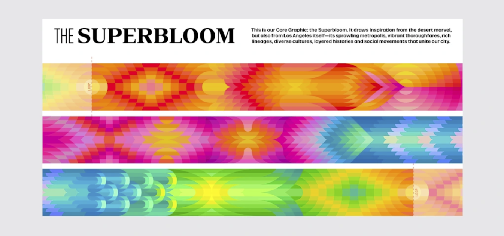
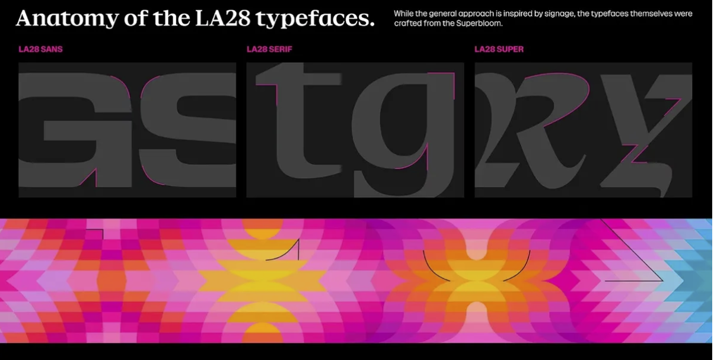

The new LA Olympics branding is blooming beautiful
Los Angeles has unveiled its unique identity for the 2028 Olympic Games, ushering in a vibrant, contemporary era for the sporting celebration. Built to reflect the diverse stories of LA's citizens, the dynamic system is alive with spirit and soul, reflecting the passion of LA28's athletes from across the globe.
Across the years, the Olympics' host countries have created some of the best sports logos of all time, with LA28 already settling in as a new classic. With custom typefaces, immersive graphics and vibrant colours, the 2028 LA Olympics brings the promise of a colourful new lifeblood for the games, bursting with character and passion.

The creative process began by looking to the past Olympic identities, particularly Los Angeles 1984, "to understand where tradition should guide and where innovation could push." At the centre of the LA28 identity is the core graphic inspired by superblooms – a vibrant phenomenon that sees barren hillsides, valleys and deserts burst with colourful flora when dormant wildflower seeds receive just the right conditions. Consisting of 13 patterns, the LA28 Superbloom is an infinite loop that nods to the people, life and culture of Los Angeles.
“The Superbloom mirrors the spirit of the Olympic and Paralympic Games,” says Ric Edwards, LA28 vice president of brand design and executive design director. “Athletes train their entire lives for a moment on the greatest stage in sports. When the conditions are right, everything comes together and something extraordinary happens. That feeling of anticipation, energy and the culmination of the many moments that led them here is what inspired our Look of the Games.”

Four unique typefaces bring diversity to the look, inspired by the typography found in LA's streets, from strip malls to hand-painted signage. The blend of LA's urban and natural environments creates a grounded contrast to the branding, elevated by its colourful palette. The four bright colour families, Poppy, Scarlet Flax, Bluebell and Sage, take inspiration from the flowers and plants of Los Angeles, with each pigment pulled from the official flower of Los Angeles: the Bird of Paradise.
“We wanted the Look to feel like Los Angeles itself,” says Geoff Engelhardt, LA28 head of brand design. “LA is a city of incredible creativity, sitting at the intersection of sport and entertainment, and the Games will bring the world together here in 2028. By embracing abstraction and emotion, we created something people can interpret in their own way and see themselves reflected in.”